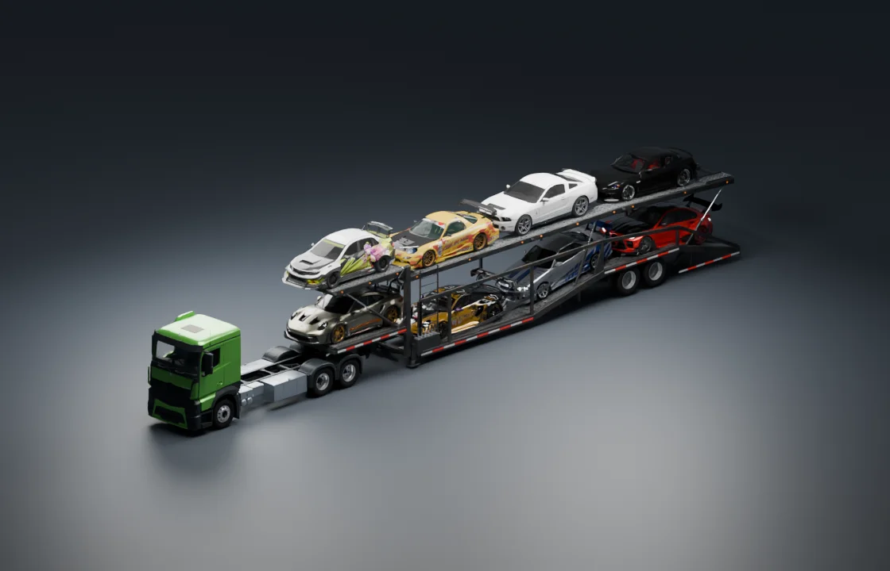

ACTROS / CAR TRANSPORTER
تحميل الناقلة.
ثماني سيارات. دور علوي، ودور سفلي.

تجهيز المشهد…تحميل الموديلات والخامات
الناقلـة جاهزة
استكشف الناقلة، أو شوف العربيات وهي بتطلع واحدة ورا التانية.
الدور العلوي ٤ / ٤الدور السفلي ٤ / ٤
01:16 / 01:16
محاكاة توضيحية: تحميل ٤ فوق و٤ تحت، وبعدها دخول السائق والبصمة والخروج للطريق والوصول للساحة التانية.
المواتير ساكتة لحين إضافة تسجيلات حقيقية